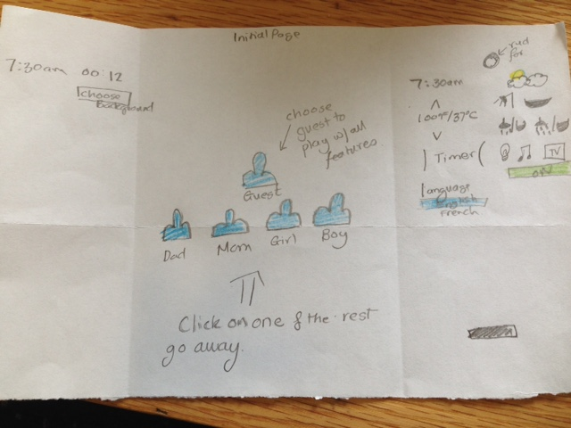
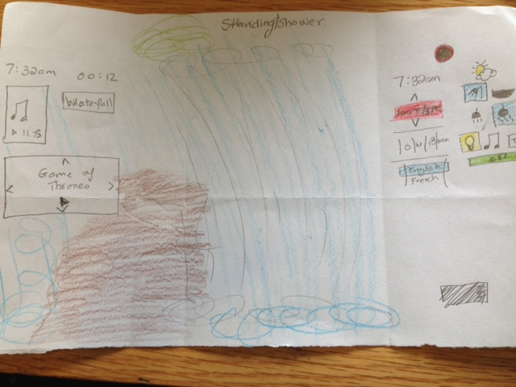
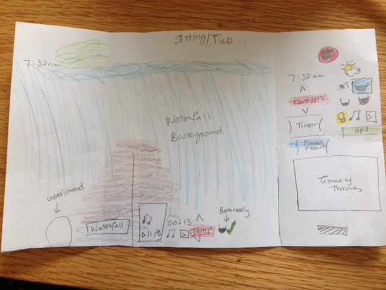
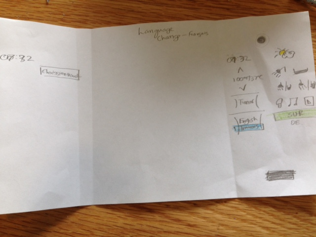

Sketches of my application |
|  |
This is the initial sketch of what the user should see whe they enter the application. This is the home screen.
There are 4 saved preferences and 1 guest. There are other applications available say if the user wants to listen to music while they brush their teeth (or do something else in the bathroom) and or they want extra lighting to do makeup perhaps.
|
|  |
After user chooses a setting, (for this sketch the user chose guest) all the other users go away.
This is what someone who wants to take a shower looks like.
All the controls are located at eye length so waist height and up and most of the controls are on the right. So the user chooses what they want and turn on the shower. If they want music OR tv/movie then they can press the button and most users tend to face the other way so they can watch as they shower.
|
|  |
After user chooses a setting, (for this sketch the user chose guest) all the other users go away.
This is what someone who wants to take a bath looks like.
All the controls are located BOTH at the left side of the shower so you can start and change temperature and make adjustments and more controls on the wall where they are lying down so there is an arms or hands reach to change temperature or music or tv while lying down.
|
|  |
This is what someone who wants to take a shower looks like, but in French.
The "choose Background"button, "on/off" button, and changing from 12hr to 24hr clock.
|